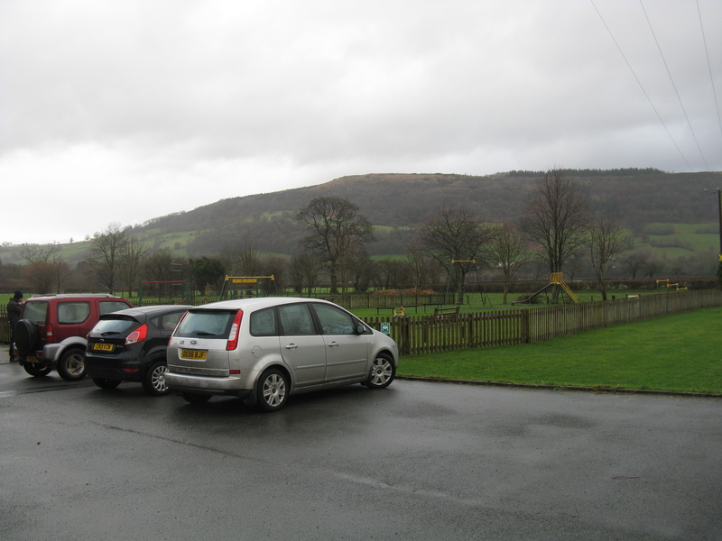
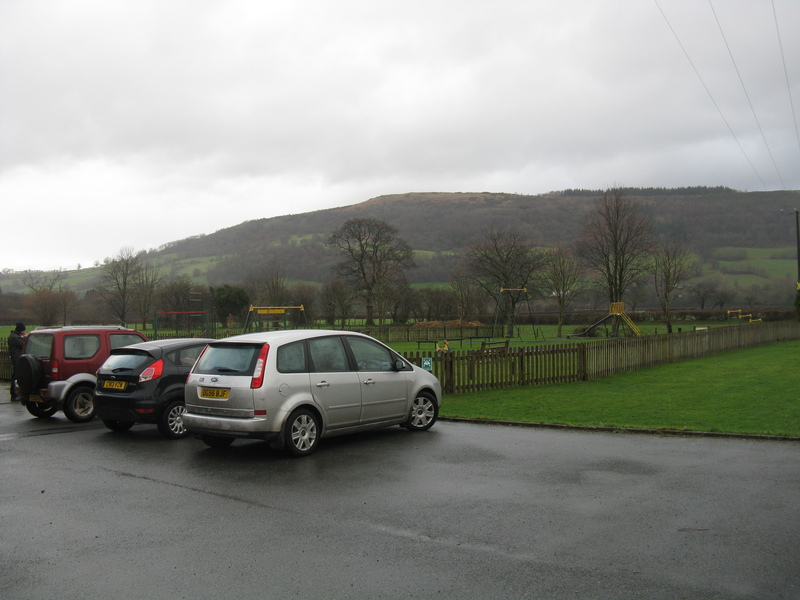

{kind=link}

The 2014 LBW is planned for 20th–26th July 2014 in the village of Talybont-on-Usk, Wales.
Our registration site is now up, please register!
LBW is a week-long event which takes place in a different European country each summer, drawing together Open Source software enthusiasts from more than a dozen different countries, for a combination of talks, presentations, hands-on mini-projects, outdoor exercise, and good food and drink.
If you would like to get involved, please get in touch!
You can contact the organisers through email at lbw2014@þþ.be. We have a mailing list which you can join too. You can find us on BBM, also available for iOS and Android. Alternatively you can meet us in IRC at #lbw on OFTC.
If you're new to LBW, we have a general website here.
 

There are fields and a children's playground with swings and roundabouts adjacent to the hall, owned by the parish council. We can get in touch with them if we'd like to do anything organised on the fields.
Talybont-on-Usk, an agreeable village in Wales. It has a CAMRA award winning pub, a canal, a river, and the Brecon Beacons National Park almost on top of you.
There are both walks at altitude for active days, and walks along the river and canal for more relaxed days. There are also lots of less obvious things including cycling, canoeing and stargazing.
You can find a list of local accomodation here. If you wish to hire a cottage, Brecon Beacon Holiday Cottages appear to run the local monopoly. To find cottages near Talybont-on-Usk on this map, zoom in on Crickhowell, then Llangynidr. Talybont-on-Usk should then be visible. (Other privately rented cottages may also be available.) Local bed and breakfast accomodation is available. There is also a local YHA hostel and a bunkhouse at the White Hart Inn. There is a camp site in the village at Talybont Farm. The hall won't be available to sleep in.
The hall can be found at 51.89742°N, -3.29088°E. The OS grid reference is SO1124622773. The postcode is LD3 7YQ.
The local website has a handy travel guide, although parts of it may be out of date.
The OS 1:25,000 map covering Talybont-on-Usk is OL13. We are fairly close to the border with OL12, so if you like buying maps you can justify two purchases.
The nearest railway station closed many years ago. The nearest useful railway station is at Abergavenny. Note that the town also has a Welsh name, Y Fenni. This should be a familiar concept for Belgians.
From Abergavenny, you can go …
The 43 / X43 bus runs through Talybont-on-Usk. It runs from Abergavenny (railway connection) to Brecon. Traveline Cymru provide local bus information in Wales. They cover various operating companies.
The nearest National Express coach stop is at Abergavenny.
The Monmouthshire & Brecon Canal runs through the Talybont-on-Usk. Unfortunately the canal is not currently connected to the rest of the network. Boats can be hired. It runs through the towns of Abergavenny and Pontypool, both of which can be reached by railway.
You could arrange your transport and accomodation in one swoop by hiring a narrow boat at Abergavenny or Pontypool, and navigating it North to Talybont-on-Usk. (You will need to move it every couple of days, if I remember the rules regarding mooring.)
Boats also also available locally for day hire.
Point your sat-nav at the postcode LD3 7YQ. There is parking at the hall.
There are lots of twisty narrow roads in this area, a right-hand drive car may be preferable. (Or a motorbike!)
There is local car rental, including an electric car.
Nearby airports are Cardiff (CWL, 50 miles away), Bristol (BRS, 70 miles away), Birmingham (BHX, 110 miles away), the various London airports which may not be near London (Gatwick, Heathrow, City, Stansted, and Luton), Manchester (MAN, 170 miles away). There is also Robin Hood Airport slightly further away near Sheffield, but do take care not to hurt their feelings.
Talybont-on-Usk is different from Talybont, which is about 100 miles away.
The sky is blue altho it is sometimes grey. The BBC have a forecast as do the Norwegians. Note that with all the hills and mountains around, forecasts may not be as reliable as you might wish.